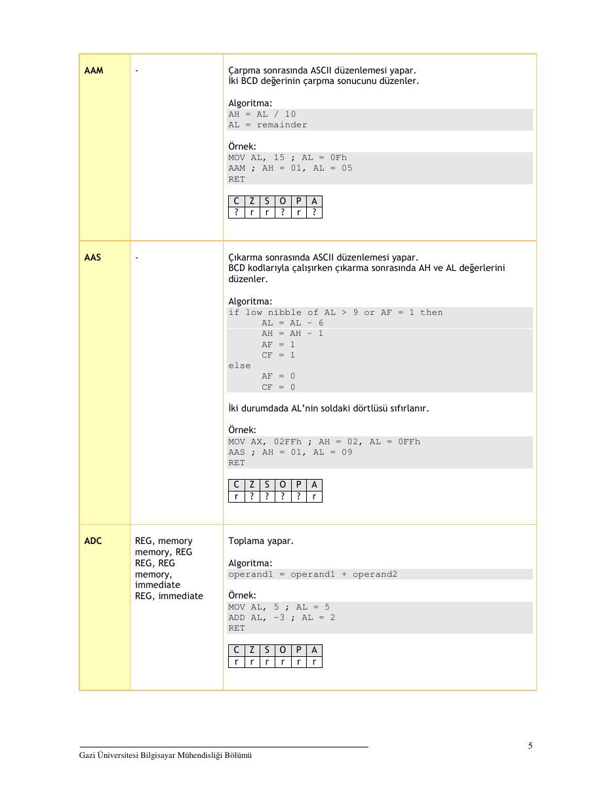
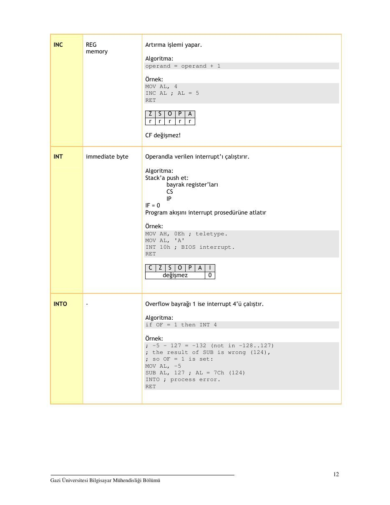

· EEM332
EEM332 Mikroişlemciler: 8086 Komut Kümesi ve Örnekler (Gazi Üniversitesi, M. Ali Akcayol)
EEM332 – Mikroişlemciler · 01.01.2007 · 18.10.2026
Bu yazı, Başkent Üniversitesi EEM332 Mikroişlemciler ders arşivindeki ilgili notları ve uygulamaları bir araya getiriyor (2007–2007). 8086 komut kümesi, operandlar ve örnek assembly işlemleri; 2007 tarihli ders notu. Kaynak: Gazi Üniversitesi, M. Ali Akcayol, 2007. Belgelerin PDF arşiv kopyaları ve varsa kaynak kodları yazının sonunda ZIP olarak indirilebilir.
Bu içerik üçüncü taraf bir kaynağa aittir; arşiv ve nostalji amacıyla kaynak belirtilerek paylaşılmıştır. Hak sahibinin talebi hâlinde kaldırılır.
_8086KomutlarOrnekler
8086 KOMUT KÜMESİ VE ÖRNEKLER
Doç.Dr. M.Ali Akcayol
Gazi Üniversitesi Bilgisayar Mühendisliği Bölümü
(2007)
NOT: Bu doküman başta emu8086 programının yardım dosyası olmak üzere aşağıdakikaynaklar kullanılarak hazırlanmıştır
Barry B. Brey, The Intel Microprocessors 8086/8088, 80186/80188, 80286, 80386, 80486, Pentium, Pentium Pro Processor, Pentium II, Pentium Ill, Pentium 4 Architecture, Programming, and Interfacing (7th edition), Prentice Hall, ISBN: 0131974076, 2006.
Walter A. Triebel, Avtar Singh, Avtar Singh, The 8088 and 8086 Microprocessors: Programming, Interfacing, Software, Hardware, and Applications (4th edition), Prentice Hall, 0130930814, 2002.
Muhammad Ali Mazidi, Janice Gillispie-Mazidi, Muhammad A. Mazidi, Janice Catherine Gillispie-Mazidi, 80X86 IBM PC and Compatible Computers: Assembly Language, Design, and Interfacing (4th edition), Prentice Hall, 2002.
Gazi Üniversitesi Bilgisayar Mühendisliği Bölümü
GENEL BİLGİLER
GENEL AMAÇLI REGİSTER'LAR
AX, BX, CX, DX, SI, DI, BP, SP
OZEL AMACLI REGISTER’LAR
IP, FLAG REGISTER’LARI
SEGMENT REGISTER’LARI
CS, DS, ES, SS
OPERAND TÜRLERİ
REG : AX, BX, CX, DX, AH, AL, BL, BH, CH, CL, DH, DL, DI, SI, BP, SP.
SREG : DS, ES, SS, CS(sadece ikinci operand).
memory _ : [BX], [BX+SI+7], degisken, vb.
immediate : 5, -24, 3Fh, 10001101b, vb.
BAYRAK DURUMLARI
1 - komut bu bayrak bitini 1 yapar.
0 - komut bu bayrak bitini O yapar.
r - bayrak değeri komutun sonucuna bağlıdır.
? - bayrak değeri tanımsızdır (1 veya 0 olabilir).
DEĞİŞKENLER
isim DB değerisim DW değerisim DD değer
Örnek
ORG 100hMOV AL, varl
MOV BX, var2RET i program durur
VARI DB 7var2 DW 1234hDİZİLER
a DB 48h, 65h, 6Ch, 6Ch, 6Fh, 00h
b DB 'Hello', 0... a[6] al1) a[2] a[3] a[4] a[5] b(6J b[1] b[2]
Gazi Üniversitesi Bilgisayar Mühendisliği Bölümü
MOV AL, a[3]MOV SI, 3MOV AL, a[SI]DUP operatörü
adet DUP ( degerler )
c DB 5 DUP (9)
c DB 9, 9, 9, 9, 9d DB 5 DUP(1, 2)sh 2 0
DEGISKENLER
isim EQU <ifade>k EQU 5
MOV AX, kMOV AX, 5BAYRAK BİTLERİ
C - Carry Flag
Z - Zero Flag
S - Sign Flag
O - Overflow Flag P - Parity Flag
A - Auxiliary Flag | - Interrupt Flag D - Direction Flag
VERİ TRANSFER KOMUTLARI
PUSH, POP, LEA, LDS, LODS, LODSB, LODSW, STOS, STOSB, STOSW, MOVS, MOVSB, MOVSW, INS, INSB,INSW, OUTS, OUTSB, OUTSW, XCHG, LAHF, SAHF, XLAT, IN, OUT
ARİTMETİK VE MANTIK KOMUTLARI
ADD, INC, ADC, SUB, DEC, SBB, CMP, MUL, IMULI DIV, IDIV, CBW, CWD, DAA, DAS, AAA, AAD, AAM, AAS,
AND, OR, XOR, TEST, NOT, NEG, SHL, SHR, SAL, SAR, ROL, RCL, RCR, ROR, SCAS, CMPSPROGRAM KONTROL KOMUTLARI
JMP, JA, JAE, JB, JBE, JC, JE, JZ, JG, JGE, JL, JLE, INC, JNE, JNZ, JNC, JNE, JNZ, JNO, JNS, JNP, JPO,
JO, JP, JPE, JS, JCXZ, LOOP, CALL, RET, INT, IRET, HLT, NOPGazi Üniversitesi Bilgisayar Mühendisliği Bölümü
GENEL BİLGİLER
KOMUT O OPERANDLAR TANIM VE ÖRNEK
5 Toplama sonrasında ASCII düzenlemesi yapar. BCD kodlarıyla çalışırken toplama sonrasında AH ve AL değerlerini
düzenler.
Algoritma
if low nibble of AL > 9 or AF = 1 then
AL = AL + 6
AH = AH +1
AF =1 CF=1 else
AF = 0
CF = 0
İki durumdada AL’nin soldaki dörtlüsü sıfırlanır.
Örnek
MOV AX, 15 ; AH = 00, AL = OFh
AAA ; AH = 01, AL = 05
RET2 Bölme sonrasında ASCII düzenlemesi yapar. İki BCD değerini bölme için hazırlar.
Algoritma
AL = (AH * 10) + AL
AH = 0
Ornek:MOV AX, 0105h ; AH = 01, AL = 05AAD ; AH = 00, AL = OFh (15)
RETc|zJsJojfJrPJA ?l)rjr|2)Jr)J2
Gazi Üniversitesi Bilgisayar Mühendisliği Bol
arpma sonrasında ASCII düzenlemesi yapar. İki BCD değerinin çarpma sonucunu düzenler.
Algoritma
AH = AL / 10
AL = remainder
Ornek:MOV AL, 15 ; AL = OFhAAM ; AH = 01, AL = 05
RETlol
N
oO} >
Çıkarma sonrasında ASCII düzenlemesi yapar. BCD kodlarıyla çalışırken çıkarma sonrasında AH ve AL değerlerini düzenler.
Algoritma
if low nibble of AL > 9 or AF - 1 then
AL = AL - 6
AH = AH - 1
AF =1 CE s1 else a (8)
CE = 0
iki durumdada AL’nin soldaki dörtlüsü sıfırlanır.
Örnek
MOV AX, O2FFh ; AH = 02, AL = OFFhAAS ; AH = 01, AL = 09
RETSPAS ee rj(2J2(2)J2)r
REG, memory memory, REG
REG, REG
memory, immediate REG, immediate
Toplama yapar.
Algoritma
operandi = operandi + operand2
Ornek:MOV AL, 5; AL = 5
ADD AL, -3 ; AL = 2
RETGEZE
rİrjrlrjrjr
Gazi Üniversitesi Bilgisayar Mühendisliği Bol
REG, memory memory, REG
REG, REG
memory, immediate REG, immediate
iki operand arasında karşılıklı tüm bitlere mantıksal VE işlemi yapar ve sonucu soldaki operanda kaydeder.
Doğruluk tablosu
1 AND 1=1
1 AND 0 o
0 AND 1 = 0
0 AND 0 = 0
Ornek:MOV AL, 'a' ; AL = 01100001b
AND AL, 11011111b ; AL = 01000001b ('A')RETae O|P olr|/r/ojr
procedure name etiket 4-byte adres
Bir prosedürü çağırır ve dönüş adresini (IP) stack'a push eder. 4 byte adres kullanılarak çağırma yapılabilir. 1234h:5678h adresinde ilk değer segment ikinci değer offset adresini belirtir. Bu far çağırmadır ve IP ile birlikte CS stack'a push edilir.
Örnek
make, COM$
ORG 100h Oo; for COM file.CALL plADD AX, 1RET ; return to DOS.pl PROC i procedure declaration.
MOV AX, 1234h
RET 7; return to caller.pl ENDP
C[z{s[o[PlA degismez
Byte degeri word’e cevirir.
Algoritma
if high bit of AL = 1 then AH = 255 (OFFh)
else
AH = 0
Ornek:
MOV AX, 0 ; AH = 0, AL = 0
MOV AL, -5 ; AX = 000FBh (251)CBW } AX = OFFFBh (-5)
RETC[z{s[o[PlA degismez
Gazi Üniversitesi Bilgisayar Mühendisliği Bol
. Taşma bayrağı (Carry flag) sıfırlanır.
Algoritma
CE = 0
Cc
- Direction bayrağı (Direction flag) sıfırlanır. SI ve DI register'ları CMPSB,
CMPSW, LODSB, LODSW,
MOVSB, MOVSW, STOSB, STOSW komutlarıyla ardarda yapılanişlemlerde artırılır.
Algoritma
DF = 0
D
s Interrup etkinleştirme bayrağı (Interrupt enable flag) sıfırlanır. Bu donanım interrupt'larını etkisiz yapar.
Algoritma
IF -0
I
i Taşma bayrağı (Carry flag) terslenir(complement).
Algoritma
if CF - 1 then CF - 0 if CF = 0 then CF - 1
Cc
R
Gazi Üniversitesi Bilgisayar Mühendisliği Bölümü
REG, memory memory, REG
REG, REG
memory, immediate REG, immediate
Karşılaştırma yapar. Soldaki operand’1 sağdakinden çıkartır ancak operandlar değişmez sadece bayrak bitleri değişir.
Algoritma
öperandi - operand2
OF, SF, ZF, AF,PF, CF bayrakları sonuca göre yeniden düzenlenir.
Örnek
MOV AL, 5MOV BL, 5CMP AL, BL ; AL=5, ZF=1 Çeşit)
RETGSE
rİrjrlrjrjr
ES: [DI] ile DS:JSIJ arasında bir byte karşılatırır.
Algoritma
DS:1SIJ — ES: [DI]
OF, SF, ZF, AF, PF, CF bayrakları sonuca göre yeniden düzenlenir. if DF = 0 then
SI =sI+1
DI =DI+1
SI=st-1 DI =DI-1
Z(s|o r[re[r[r[r[r
ES:[DI] ile DS:[SI] arasında bir word karşılatırır.
Algoritma
DS: [SI] - ES: [DI]
OF, SF, ZF, AF, PF, CF bayrakları sonuca göre yeniden düzenlenir. if DF = 0 then
SI = SI + 2
DI = DI +2
SI = SI - 2
DI = DI - 2
Z{[s[o rİrjrirjrjr
Gazi Üniversitesi Bilgisayar Mühendisliği Bölümü
. İşaretli sayılarda word boyutunu doubleword boyutuna genişletir.
Algoritma
if high bit of AX = 1 then DX = 65535 (OFFFFh)
else
DX = 0
Ornek:
MOV DX, 0 ; DX = 0
MOV AX, 0 ; AX = 0MOV AX, —5 ; DX AX = 00000h:0FFFBhCWD ; DX AX = OFFFFh:0FFFBh
RETCIZISTOJPTA
değişmez
2 Toplamadan sonra ondalık düzenlemesi yapar. İki BCD değerinin toplam sonucunu düzenler.
Algoritma
if low nibble of AL > 9 or AF - 1 then
AL = AL + 6
AF =1
if AL > 9Fh or CF = 1 then AL = AL + 60h
CF =1
Ornek:
MOV AL, OFh } AL = OFh (15)
DAA AE Gia
RETa O|P
3 Çıkarmadan sonra ondalık düzenlemesi yapar. İki BCD değerinin çıkarma sonucunu düzenler.
Algoritma
if low nibble of AL > 9 or AF - 1 then
AL = AL - 6
AF =1
if AL > 9Fh or CF = 1 then AL = AL — 60h
Cr Si
Ornek:
MOV AL, OFFh ; OFFh (<1)
DAS 7 99h, CF -1
RETc|zJsJoJPJA rİrjrirjrjr
Gazi Üniversitesi Bilgisayar Mühendisliği Bölümü
REG Azaltma işlemi yapar. memory
Algoritma
operand = operand - 1
Ornek:MOV AL, 255 ; AL = OFFh (255 or -1)
DEC AL ; AL = OFEh (254 or -2)RETc|zJsJofJPJA rİrjirirjrjr
CF değişmez! REG İşaretsiz bölme yapar. memory
Algoritma
operand byte ise
AL - AX / operand AH - remainder (kalan)
operand word ise
AX = (DX AX) / operand DX = remainder (kalan)
Ornek:‘MOV AX, 203 ; AX = 00CBh
MOV BL, 4DIV BL 7 AL = 50 (32h), AH = 3
RETcj|zjsJofJPJA
İNENENENENE
- Program kapatılır.
Örnek
MOV AX, 5
HLTc(zJsJoJPJA değişmez
Gazi Üniversitesi Bilgisayar Mühendisliği Bol
REG İşaretli bölme yapar. memory
Algoritma
operand byte ise
AL = AX / operand
AH = remainder (kalan)
operand word ise
AX = (DX AX) / operand
DX = remainder (kalan)
Ornek:MOV AX, -203 ; AX = OFF35hMOV BL, 4IDIV BL ; AL = -50 (0CEh), AH = -3 (OFDh)
RETc/zJsJojJrPJA
Tl?l?l?7 lel?
REG isaretli çarpma yapar. memory
Algoritma
operand byte ise
AX = AL * operand
operand word ise
(DX AX) = AX * operand
Ornek:
MOV AL, -2
MOV BL, -4IMUL BL ; AX = 8
RETcj(zJsJojJrPJA r|2(/2(r|J2)(2
Sonuç operandan taşmazsa CF=OF=0 sıfır olur.
AL, im.byte AL veya AX'e porttan giriş alır. AL, DX ikinci operand port numarasidir. AX, im.byte AX, DX Second operand is a port number. Eğer 255 üstündeki portlara erişim gerekiyorsa DX register’1 kullanılır.
Ornek:
IN AX, 4 ; get status of traffic lights.
IN AL, 7 ; get status of stepper-motor.cj|zJsJoJPJA değişmez
Gazi Üniversitesi Bilgisayar Mühendisliği Bol
REG Artırma işlemi yapar. memory
Algoritma
operand = operand + 1
Ornek:MOV AL, 4
INC AL ; AL
RET" a
SJOJPJA
r[r[r[r[r
CF degismez!
immediate byte Operandla verilen interrupt’) çalıştırır.
Algoritma
Stack’a push et
bayrak register'ları cs
IP
IF=0 Program akışını interrupt prosedürüne atlatır
Örnek
MOV AH, OBh ; teletype.
MOV AL, 'A'INT 10h ; BIOS interrupt.
RETCi[z[s[o[P[A degismez 0
2 Overflow bayrağı 1 ise interrupt 4'ü çalıştır.
Algoritma
if OF = 1 then INT 4
Ornek:} -5 - 127 = -132 (not in -128..127)
; the result of SUB is wrong (124),
ji so OF = 1 is set:MOV AL, -5SUB AL, 127 ; AL = 7Ch (124)INTO ; process error.
RETGazi Üniversitesi Bilgisayar Mühendisliği Bol
Interrupt dönüşü.
Algoritma
Stack'tan pop et
IP
cs flags register
c(zJsJoJPJA
pop ediliretiket
Eğer birinci operand ikinciden büyükse kısa atlama (short jump yapar). İşaretsiz karşılaştırma yapar.
Algoritma
if (CF = 0) and (ZF = 0) then jump
Örnek
include ‘emu8086.inc'make_COM#
ORG 100hMOV AL, 250CMP AL, 5
JA etiketiPRINT 'AL 5'ten büyük degil'
JMP exit
etiketi:PRINT 'AL 5’ten büyük"
exit
RETCIZ[S[oO[P[A degismez
Gazi Üniversitesi Bilgisayar Mühendisliği Bol
etiket Eğer birinci operand ikinciden büyük veya eşitse kısa atlama (short
jump yapar). İşaretsiz karşılaştırma yapar.Algoritma
if CF = 0 then jump
Ornek:
include 'emu8086.inc"make_COM# ‘ORG 100h
MOV AL, 5
CMP AL, 5
JAE etiketliPRINT 'AL is not above or equal to 5'
JMP exitetiketi; PRINT 'AL is above or egual to 5'
exit
RETc(zJsJoJPJA değişmez
etiket Eğer birinci operand ikinciden küçükse kısa atlama (short jump yapar). İşaretsiz karşılaştırma yapar.
Algoritma
if CF = 1 then jump
Ornek:
include 'emu8086.inc"make_COM#
ORG 100h
MOV AL, 1
CMP AL, 5
JB etiketlPRINT 'AL is not below 5!
JMP exit
etiketi:PRINT 'AL is below 5'
exit
RETCELLE
değişmez
Gazi Üniversitesi Bilgisayar Mühendisliği Bölümü
etiket
Eğer birinci operand ikinciden küçük veya eşitse kısa atlama (short
jump yapar). İşaretsiz karşılaştırma yapar.Algoritma
if CF = 1 or ZF = 1 then jump
Ornek:
include 'emu8086.inc"make_COM#
‘ORG 100h
MOV AL, 5‘CMP AL, 5
JBE etiketliPRINT 'AL is not below or equal to 5' IMP exit
etiketi
PRINT 'AL is below or egual to 5'
exit
RETc(zJsJoJPJA değişmez
etiket
Taşma bayrak biti 1 ise kısa atlama yapar.
Algoritma
if CF = 1 then jump
Örnek
include 'emu8086.inc'make_COM#
‘ORG 100h
MOV AL, 255
ADD AL, 1
JC etiketiPRINT 'taşma yok"
JMP exit
siiketli:PRINT “taşma var'
exit
RETcizJsJoJPJA değişmez
Gazi Üniversitesi Bilgisayar Mühendisliği Bölümü
etiket CX register’! 1 ise kısa atlama yapar.
Algoritma
if CX = 0 then jump
Örnek
include "emu8086.inc"make_COM#
ORG 100h
MOV CX, 0
JCXZ etiket1PRINT 'CX sıfır de§ildir.' IMP exit
etiketl
PRINT 'CX sıfırdır.'
exit
RETCIZ[s[O[P[A degismez
etiket Eger birinci operand ikinci operanda esitse kisa atlama (short jump yapar). İşaretli veya işaretsiz karşılaştırma yapar.
Algoritma
if 2F = 1 then jump
Örnek
include 'emu8086.inc'make COM#
ORG 100h
MOV AL, 5
CMP AL, 5
JE etiketlPRINT 'AL 5’e eşit değil." UMP exit
etiketli
PRINT 'AL 5’e eşit.' exits
RETCI[Z[S[O][P[A
degismez
Gazi Üniversitesi Bilgisayar Mühendisliği Bölümü
etiket
Eğer birinci operand ikinciden büyük veya eşitse kısa atlama (short
jump yapar). İşaretli karşılaştırma yapar.Algoritma
if (ZF = 0) and (SF = OF) then jump
Örnek
include 'emu8086.inc"make_COM# ‘ORG 100h
MOV AL, 5
CMP AL, -5
JG etiketliPRINT 'AL -5'ten büyük değildir.'
JMP exitetiketi; PRINT ' AL -5'ten büyüktür."
exit
RETc(zJsJoJPJA değişmez
etiket
Eğer birinci operand ikinciden büyük veya eşitse kısa atlama (short
jump yapar). İşaretli karşılaştırma yapar.Algoritma
if SF - OF then jump
Örnek
include 'emu8086.inc"make_COM#
ORG 100hMOV AL, 2CMP AL, -5JGE etiketliPRINT 'AL < -5'
JMP exit
etiketi:PRINT 'AL >= -5'
exit
RETCELLE
değişmez
Gazi Üniversitesi Bilgisayar Mühendisliği Bol
etiket
Eğer birinci operand ikinciden küçükse kısa atlama (short jump yapar). İşaretli karşılaştırma yapar.
Algoritma
if SF <> OF then jump
Örnek
include 'emu8086.inc"make_COM#
ORG 100hMOV AL, -2
CMP AL, 5
JL etiketliPRINT 'AL >= 5."
UMP exit etiketi;
PRINT 'AL < 5.'
exit
RETc(zJsJoJPJA değişmez
etiket
Eğer birinci operand ikinciden küçük veya eşitse kısa atlama (short
jump yapar). İşaretli karşılaştırma yapar.Algoritma
if SF <> OF or ZF - 1 then jump
Örnek
include 'emu8086.inc"make_COM#
ORG 100hMOV AL, -2CMP AL, 5JLE etiketliPRINT 'AL > 5.'
JMP exit
etiketi:PRINT 'AL <= 5.'
exit
RETCELLE
değişmez
Gazi Üniversitesi Bilgisayar Mühendisliği Bol
etiket 4-byte adres
Şartsız atlama yapar. . 4-byte adres 1234h:5678h seklinde girilebilir. ilk deger segment ikinci offset adrestir.
Algoritma
always jump
Ornek:include 'emu8086.inc'make_COM#
ORG 100hMOV AL, 5UMP etiket1 ; jump over 2 lines! PRINT ‘Not Jumped!"
MOV AL, 0etiketi
PRINT 'Got Here!
RETc(zJsJoJPJA değişmez
etiket
Eğer birinci operand ikinciden büyük değilse kısa atlama (short jump) yapar. İşaretsiz karşılaştırma yapar.
Algoritma
if CF = 1 or ZF = 1 then jump
Ornek:include 'emu8086.inc"make_COM#
ORG 100hMOV AL, 2CMP AL, 5JNA etiketliPRINT 'AL is above 5."
JMP exitetiket lc
PRINT 'AL is not above 5."
exit
RETCIZISTOJPTA
değişmez
Gazi Üniversitesi Bilgisayar Mühendisliği Bol
etiket
Eğer birinci operand ikinciden büyük değilse ve eşit değilse kısa atlama (short jump) yapar. İşaretsiz karşılaştırma yapar.
Algoritma
if CF = 1 then jump
Ornek:
include 'emu8086.inc"make_COM#
ORG 100hMOV AL, 2
CMP AL, 5
JNAE etiketiPRINT 'AL >= 5."
JMP exitetiketi;
PRINT 'AL < 5.'
exit
RETc(zJsJoJPJA değişmez
etiket
Eğer birinci operand ikinciden küçük değilse kısa atlama (short jump) yapar. İşaretsiz karşılaştırma yapar.
Algoritma
if CF = 0 then jump
Ornek:include 'emu8086.inc"make_COM#
ORG 100hMOV AL, 7CMP AL, 5JNB etiket1PRINT 'AL < 5.'
JMP exit
etiketi:PRINT 'AL >= 5."
exit
RETCELLE
değişmez
Gazi Üniversitesi Bilgisayar Mühendisliği Bol
etiket Eğer birinci operand ikinciden küçük değilse ve eşit değilse kısa atlama (short jump) yapar. İşaretsiz karşılaştırma yapar.
Algoritma
if (CF = 0) and (ZF = 0) then jump
Ornek:
include 'emu8086.inc"make_COM# ‘ORG 100h
MOV AL, 7
CMP AL, 5
JNBE etiketiPRINT 'AL <= 5."
JMP exitetiketi;
PRINT 'AL > 5.'
exit
RETc(zJsJoJPJA değişmez
etiket Taşma bayrak biti (carry flag) O ise kısa atlama (short jump) yapar.
Algoritma
if CF = 0 then jump
Ornek:
include 'emu8086.inc'make_COM# ‘ORG 100h
MOV AL, 2
ADD AL, 3
JNC etiketliPRINT ‘has carry.' UMP exit etiketi; PRINT 'no carry.'
exit
RETcizJsJoJPJA değişmez
Gazi Üniversitesi Bilgisayar Mühendisliği Bol
etiket Eğer birinci operand ikinciye eşit değilse kısa atlama (short jump) yapar. İşaretli veya işaretsiz karşılaştırma yapar.
Algoritma
if ZF = 0 then jump
Ornek:
include 'emu8086.inc'make_COM#
ORG 100h
MOV AL, 2
CMP AL, 3INE etiketi
PRINT 'AL = 3."
IMP exit etiketlik PRINT 'Al <> 3.'
exit
RETCIZ[S[O[P[A
degismez
etiket Eger birinci operand ikinciden büyük değilse kısa atlama (short jump) yapar. İşaretli karşılaştırma yapar.
Algoritma
if (ZF = 1) and (SF <> OF) then jump
Örnek
include 'emu8086.inc"make_COM#
ORG 100hMOV AL, 2CMP AL, 3ING etiket1
PRINT 'AL > 3.'
JMP exit
etiketi:PRINT 'Al <= 3."
exit
RETCIZJISToJPJA değişmez
Gazi Üniversitesi Bilgisayar Mühendisliği Bol
etiket Eğer birinci operand ikinciden büyük değilse ve eşit değilse kısa atlama (short jump) yapar. İşaretli karşılaştırma yapar.
Algoritma
if SF <> OF then jump
Örnek
include 'emu8086.inc"make_COM# ‘ORG 100h
MOV AL, 2
CMP AL, 3
JNGE etiketliPRINT 'AL >= 3.'
JMP exitetiketi; PRINT 'Al < 3.'
exit
RETc(zJsJoJPJA değişmez
etiket Eğer birinci operand ikinciden küçük değilse kısa atlama (short jump) yapar. İşaretli karşılaştırma yapar.
Algoritma
if SF - OF then jump
Örnek
include 'emu8086.inc"make_COM#
ORG 100hMOV AL, 2CMP AL, -3JNL etiketliPRINT 'AL < -3.'
JMP exitetiketi
PRINT 'Al >= -3.'
exit
RETCELLE
değişmez
Gazi Üniversitesi Bilgisayar Mühendisliği Bol
etiket Eğer birinci operand ikinciden küçük değilse ve eşit değilse kısa atlama (short jump) yapar. İşaretli karşılaştırma yapar.
Algoritma
if (SF - OF) and (ZF - 0) then jump
Örnek
include 'emu8086.inc"make_COM#
‘ORG 100h
MOV AL, 2CMP AL, -3İNLE etiketi
PRINT 'AL <= -3.'
JMP exit
etiketi:PRINT 'Al > -3.'
exit
RETc(zJsJoJPJA değişmez
etiket Overflow bayrak biti 0 ise kısa atlama (short jump) yapar.
Algoritma
if OF = 0 then jump
Ornek:-5 - 2 = -7 (inside -128..127) the result of SUB is correct,
so OF = 0
include 'emu8086.inc'make_COM#
ORG 100h
MOV AL, -5
SUB AL, 2 ; AL = 0F9h (-7)
JNO etiketliPRINT 'overflow!' IMP exit etiketlik PRINT 'no overflow."
exit
RETc(zJsJoJPJA değişmez
Gazi Üniversitesi Bilgisayar Mühendisliği Bölümü
etiket Parity (eşlik) bayrak biti 0 ise (odd-tek) kısa atlama (short jump) yapar. Sadece en düşük öneme sahip 8 bit kontrol edilir. CMP, SUB, ADD,
TEST, AND, OR, XOR komutları set eder.Algoritma
if PF = 0 then jump
Ornek:include 'emu8086.inc'make_COM#
ORG 100hMOV AL, 00000111b ; AL = 7
OR AL, 0 ; just set flags.INP etiket1
PRINT 'parity even.'
JMP exitetiketi
PRINT 'parity odd.'
exit
RETcj|zJsJoJPJAa değişmez
etiket İşaret bayrak (signed) biti 1 değilse (pozitif) kısa atlama (short jump) yapar. CMP, SUB, ADD, TEST, AND, OR, XOR komutları set eder.
Algoritma
if SF = 0 then jump
Ornek:
include 'emu8086.inc'make_COM#
ORG 100h
MOV AL, 00000111b ; AL = 7
OR AL, 0 ; just set flags.ONS etiket1 PRINT 'signed.' UMP exit
etiketl
PRINT 'not signed.’
exit
RETC[z{s[o[PlA degismez
Gazi Üniversitesi Bilgisayar Mühendisliği Bol
etiket Sıfır bayrak (ZF) biti O ise (pozitif) kısa atlama (short jump) yapar.
CMP, SUB, ADD, TEST, AND, OR, XOR komutları set eder.Algoritma
if ZF = 0 then jump
Ornek:include 'emu8086.inc"make_COM#
ORG 100hMOV AL, 00000111b ; AL=7
OR AL, 0 ; just set flags.
JNZ etiket1PRINT 'zero.'
UMP exit
etiketi;
PRINT 'not zero.'
exit
RETc(zJsJoJPJA değişmez
etiket Overflow bayrak (OF) biti 1 ise kısa atlama (short jump) yapar.
Algoritma
if OF - 1 then jump
Örnek
e iye 132 (ice in 128127)
; the result of SUB is wrong (124),i so OF = 1 is set
include 'emu8086.inc'make_COM#
org 100hMOV AL, -5SUB AL, 127 ; AL = 7Ch (124)JO etiketiPRINT 'no overflow.'
IMP exit
etiketii
PRINT 'overflow!'
exit
RETC[Z[S[O[P[A
degismez
Gazi Üniversitesi Bilgisayar Mühendisliği Bol
etiket
Parity (eşlik) bayrak biti 1 ise (even-çift) kısa atlama (short jump) yapar. Sadece en düşük öneme sahip 8 bit kontrol edilir. CMP, SUB,
ADD, TEST, AND, OR, XOR komutları set eder.Algoritma
if PF = 1 then jump
Ornek:include 'emu8086.inc"make_COM#
ORG 100hMOV AL, 00000101b ; AL = 5
OR AL, 0 ; just set flags.
JP etiketlPRINT 'parity odd.'
UMP exit
etiketi
PRINT 'parity even."
exit
RETcj|zJsJoJPJAa değişmez
etiket
Parity çift ise (even) kısa atlama (short jump) yapar. Sadece en düşük öneme sahip 8 bit kontrol edilir. CMP, SUB, ADD, TEST, AND, OR, XOR komutları set eder.
Algoritma
if PF = 1 then jump
Örnek
include 'emu8086.inc"make_COM#
ORG 100hMOV AL, 00000101b ; AL = 5
OR AL, 0 ; just set flags.
JPE etiket1PRINT 'parity odd.'
JMP exitetiketli
PRINT 'parity even.'
exit
RETc(zJsJoJPJA değişmez
Gazi Üniversitesi Bilgisayar Mühendisliği Bol
etiket Parity tek ise (odd) kısa atlama (short jump) yapar. Sadece en düşük öneme sahip 8 bit kontrol edilir. CMP, SUB, ADD, TEST, AND, OR, XOR komutları set eder.
Algoritma
if PF = 0 then jump
Ornek:include 'emu8086.inc"make_COM#
ORG 100hMOV AL, 00000111b ; AL = 7
OR AL, 0 ; just set flags.
JPO etiketliPRINT 'parity even.'
UMP exit
etiketi
PRINT 'parity odd.'
exit
RETcj|zJsJoJPJAa değişmez
etiket Sign bayrak biti 1 ise (negatif) kısa atlama (short jump) yapar. CMP,
SUB, ADD, TEST, AND, OR, XOR komutları set eder.Algoritma
if SF = 1 then jump
Ornek:
include 'emu8086.inc'make_COM#
ORG 100h
MOV AL, 10000000b ; AL = -128
OR AL, 0 ; just set flags.
JS etiketiPRINT 'not signed.' UMP exit
etiketl
PRINT 'signed.'
exit
RETC[z{s[o[PlA degismez
Gazi Üniversitesi Bilgisayar Mühendisliği Bol
etiket Eğer sıfır ise (ZF-1) kısa atlama (short jump) yapar. CMP, SUB, ADD,
TEST, AND, OR, XOR komutları set eder.Algoritma
if ZF = 1 then jump
Örnek
include 'emu8086.inc"make_COM#
ORG 100hMOV AL, 5CMP AL, 5JZ etiketiPRINT 'AL is not equal to 5.' UMP exit
etiketi;
PRINT 'AL is equal to 5.'
exit
RETc(zJsJoJPJA değişmez
2 AH register’ina bayrak register’inin (flags register) en düşük öneme sahip 8 bit’ini yükler.
Algoritma
AH = flags register AH: 7 6 5 4 3 2 1 te)
(SF) [ZF] [0] [AF] [0] [PF] [1] [CF]
1, 3, 5 bitleri ayrılmıştır.
CIZ[S[oO[P[A degismez
REG, memory Hafizadan alınan doubleword datayı hedef operand register’a ve DS’ye yükler.
Algoritma
REG = first word DS = second word
Ornek:make_COM#
ORG 100hLDS AX, m
RETm DW 1234hDW 5678h
ENDAX is set to 1234h, DS is set to 5678h.
cJzJsJoJPJA değişmez
Gazi Üniversitesi Bilgisayar Mühendisliği Bol
REG, memory Efektif adres yükler.
Algoritma
REG = adres of memory (offset)
Örnek
make_COM#
ORG 100h
LEA AX, m
RETm DW 1234h
ENDAX’e 0104h degeri atanir.
LEA komutu 3 byte, RET komutu 1 byte’tir. 0100h adresindenbaşlandığı icin m’nin adresi 0104h olur.
CIZJSJOJPJA
değişmez
REG, memory Hafızadan alınan doubleword datayı hedef operand register'a ve ES'ye yükler.
Algoritma
REG = first word ES = second word
Ornek:make COM$#
ORG 100hLES AX, m
RETm DW 1234hDW 5678h
ENDAX register’inin değeri 1234h olur ve ES register’inin değeri 5678h olur.
CIZJSJoJPJA değişmez
Gazi Üniversitesi Bilgisayar Mühendisliği Bölümü
. AL register’ina DS:[SI] adresinden bir byte yükler. SI değeri güncellenir (1 artırılır (D=0), 1 azaltılır (D=1))
Algoritma
AL = DS:1SI)J
if DF = 0 then Sr = Si + 1 else
Seki sl
Örnek
make_COM#
ORG 100h
LEA SI, al
MOV CX, 5
MOV AH, OEh
m: LODSB
INT 10h
LOOP mRETal DB 'H', 'e', Cl, '1!, to!CiZ[s[o[P[A degismez
i AX register'ına DS:[SI] adresinden bir word yükler. SI değeri güncellenir (2 artırılır (D=0), 2 azaltılır (D=1))
Algoritma
AX = DS:(SIJ
if DF = 0 then Su = si 2 else
Sh ei = 2
Ornek:make_COM#
ORG 100hLEA SI, alMOV CX, 5REP LODSW ; finally there will be 555h in AX.
RETal dw 1lih, 222h, 333h, 444h, 555hCIZJSJoJPJA değişmez
Gazi Üniversitesi Bilgisayar Mühendisliği Bol
etiket CX bir azaltılır ve CX sıfır değilse etikete atlanır.
Algoritma
ex sGX-1
if CX <> 0 then
jumpelse
no jump, continue
Örnek
include 'emu8086.inc"make_COM#
ORG 100hMOV CX, 5etiker ik
PRININ 'loop!'
LOOP etiket1RETCI[Z[S[O][P[A
degismez
etiket CX bir azaltilir ve CX sifir degilse ve esitlik varsa (verilen iki operand arasinda) (ZF=1) etikete atlar.
Algoritma
xx =
if (CX <> 0) and (ZF = 1) then
jumpelse
no jump, continue
Ornek:; Loop until result fits into AL alone,
; or 5 times. The result will be over 255
; on third loop (100+100+100),; so loop will exit.include 'emu8086.inc’make_COM#
ORG 100hMOV AX, OMOV CX, 5etiketi
PUTC '*'
ADD AX, 100CMP AH, 0LOOPE etiket1lRETC[Z[S[O[Pl/A degismez
Gazi Üniversitesi Bilgisayar Mühendisliği Bölümü
etiket CX bir azaltılır ve CX sıfır değilse ve eşitlik yoksa (verilen iki operand arasında) (ZF=0)
Algoritma
EK =x
if (CX <> 0) and (ZF = 0) then
jumpelse
no jump, continue
Ornek:; Loop until '7' is found,
; or 5 times.include 'emu8086.inc'make_COM#
ORG 100hMOV SI, 0MOV CX, 5etiketi
PUTC '4!
MOV AL, v1[SI]INC SI ; next byte (SI=SI+1).
CMP AL, 7LOOPNE etiketlRETvl db 9, 8, 7, 6, 5cizJsJoJPJA değişmez
etiket CX bir azaltılır ve CX sıfır değilse ve ZF=0 ise etikete atlar.
Algoritma
CX = CX -— 1
if (CX <> 0) and (ZF = 0) then
jumpelse
no jump, continue
Ornek:; Loop until '7' is found,7 or 5 times.
include 'emu8086.inc!make_COM#
ORG 100hMOV SI, 0MOV CX, 5etiketl
rege) Tet
MOV AL, v1[SI]INC SI ; next byte (SI=SI+1).CMP AL, 7
LOOPNZ etiketli
RETvl db 9, 8, 7, 6, 5cj|zJsJoJPJAa değişmez
Gazi Üniversitesi Bilgisayar Mühendisliği Bölümü
etiket CX bir azaltılır ve CX sıfır değilse ve ZF=1 ise etikete atlar.
Algoritma
cece
if (CX <> 0) and (ZF = 1) then
jumpelse
no jump, continue
Ornek:; Loop until result fits into AL alone,
; or 5 times. The result will be over 255
; on third loop (100+100+100),; so loop will exit.include 'emu8086.inc'make_COM#
ORG 100hMOV AX, 0MOV CX, 5etiketi
Eyre 1 #
ADD AX, 100CMP AH, 0LOOPZ etiketlRETCIZ[S[O[P[A
degismez
MOV REG, memory İkinci operand birinci operanda kopyalanır.| memory, REG |
|---|
REG, REG MOV komutuyla
memory, * CS ve IP register'larına değer atanamaz. immediate * İki segment register'i arasında değer aktarılamaz (önce genel REG, immediate amaçlı register'a aktarılmalıdır). SREG, memory
memory, SREG Algoritma
REG, SREG operandl = operand2
SREG, REG
Ornek:make_COM#
ORG 100hMOV AX, OB800h ; set AX = B800h (VGA memory).
MOV DS, AX ; copy value of AX to DS.MOV CL, 'A' ; CL = 41h (ASCII code).MOV CH, 01011111b ; CL = color attribute.
MOV BX, 15Eh ; BX = position on screen.MOV [BX], CX ; w.[0B800h:015Eh] = CX.RET ; returns to operating system.cj|zJsJoJPJAa değişmez
Gazi Üniversitesi Bilgisayar Mühendisliği Bölümü
. DS:(SIJ adresinden ES:(DIJ adresine bir byte kopyalar. SI ve DI register'ları güncellenir.
Algoritma
ES:(DIJ = DS:[SI]
if DF = 0 then SE = Si 4 1 DI =DI+1
SI=st-1
DI = DI-1
Ornek:make_COM#
ORG 100hLEA SI, alLEA DI, a2MOV CX, 5REP MOVSBRETai Bel, 2, 3,475
a2 DB 5 DUP (0)c(zJsJoJPJA değişmez
. DS:(SIJ adresinden ES: [DI] adresine bir word kopyalar. SI ve DI register'ları güncellenir.
Algoritma
ES:(DI] = DS:(SIJ
if DF = 0 then
SI = SI + 2
DI = DI + 2
SI = SI -2
DI = DI - 2
Ornek:make_COM#
ORG 100hLEA SI, alLEA DI, a2MOV CX, 5REP MOVSWRETal DW 1,2,3,4,5
a2 DW 5 DUP(0)CIZ[s[O[P[A degismez
Gazi Üniversitesi Bilgisayar Mühendisliği Bol
REG
memory
İşaretsiz çarpma yapar.
Algoritma
operand byte ise
AX - AL * operand.
operand word ise
(DX AX) = AX * operand.
Ornek:MOV AL, 200 ; AL = 0C8h
MOV BL, 4MUL BL ; AX = 0320h (800)
RETC{[Z{[s[O[PlA cl? [?[r[?[?
CF=OF=0 when high section of the result is zero.
REG
memory
Bir sayının işaretini tersler (ikinin tümleyeni).
Algoritma
Invert all bits of the operand
Add 1 to inverted operandOrnek:MOV AL, 5 ; AL = 05hNEG AL ; AL = OFBh (-5) NEG AL ; AL = 05h (5)
RETc|zJsJo rİrjrirjrjr
İşlem yapmaz.
Algoritma
Do nothing
Örnek
; do nothing, 3 times:
NOPNOPNOPRETcizJsJoJPJA değişmez
Gazi Üniversitesi Bilgisayar Mühendisliği Bol
REG Operandaki her bit terslenir (birin tümleyeni). memory
Algoritma
if bit is 1 turn it to 0. if bit is 0 turn it to 1.
Ornek:MOV AL, 00011011bNOT AL ; AL = 11100100b
RETCIZ[sS[O[P[A
degismez REG, memory İki operandaki karşılıklı her bit için mantıksal veya işlemi yapar. memory, REG
REG, REG Doğruluk tablosu
memory, 1OR1=1
immediate 1 oR 0 REG, immediate OORI
Örnek
MOV AL, 'A' ; AL = 01000001bOR AL, 00100000b ; AL = 01100001b ('a')
RETc|zJsJojfJrPJA olr|r/ojJrfJ2
OUT im.byte, AL AL veya AX register’1 verilen porta gönderilir.im.byte, AX İlk operand port numarasıdır. Eğer 255'in üstündeki portlara erişim DX, AL gerekirse DX register’) kullanılır.
DX, AX
Örnek
MOV AX, OFFEh ; Turn on allOUT 4, AX ; traffic lights.MOV AL, 100b ; Turn on the thirdOUT 7, AL ; magnet of the stepper-motor.cj|zJsJoJPJA değişmez
Gazi Üniversitesi Bilgisayar Mühendisliği Bol
REG
SREG
memory
Stack’tan 16 bit değer alır ve operanda aktarır.
Algoritma
operand = SS:[SP] (stack'ın en üstü)
SP - SP 42
Örnek
MOV AX, 1234hPUSH AXPOP DX ; DX = 1234hRETcj|zJsJoJPJAa değişmez
Bütün genel amaçlı register'ları (DI, SI, BP, SP, BX, DX, CX, AX) stack’tan pop eder. SP değeri gözardı edilir.
Not: Bu komut sadece 80186 ve üstü lişlemcilerde kullanılır.Algoritma
POP DIPOP SIPOP BPPOP xx (SP gözardı edilir)
POP BXPOP DXPOP CXPOP AXcj|zJsJoJPJA değişmez
Flag register’ina stack’tan değer pop edilir.
Algoritma
flags = SS:(SPJ (top of the stack)
SP = SP + 2
C[Z[s[oO[PlA
Pop edilirGazi Üniversitesi Bilgisayar Mühendisliği Bölümü
REG
SREG
memory immediate
16 bit değer stack'a saklanır. Store 16 bit value in the stack.
Not: PUSH immediate sadece 80186 ve üstü işlemcilerde kullanılır.Algoritma
e
SS:[SP] (top of the stack) = operand
Ornek:MOV AX, 1234hPUSH AXPOP DX ; DX = 1234hRETCIZJSJOJPJA
değişmez
Tüm genel amaçlı register'ları (AX, CX, DX, BX, SP, BP, SI, DI) stack’a push eder. SP register’in1 PUSHA komutundan önceki değeri kullanılır.
Not: Bu komut sadece 80186 ve üstü işlemcilerde kullanılır.Algoritma
PUSH AX
PUSH CX
PUSH DX
PUSH BX
PUSH SP
PUSH BP
PUSH SI
PUSH DIc(zJsJoJPJA değişmez
Flag register’ stack'a saklar.
Algoritma
SP = SP - 2
SS:[SP] (top of the stack) = flags
cj|zJsJoJPJAa değişmez
Gazi Üniversitesi Bilgisayar Mühendisliği Bölümü
memory, immediate
REG, immediate memory, CL
REG, CL
Birinci operandi taşma bayrağı (carry flag) üzerinden sola döndürür. Bit olarak dönme sayısı ikinci operandla belirtilir.
Algoritma
shift all bits left, the bit that goes off is set to CF and
previous value of CF is inserted to the right-most position.
Örnek
STC ; set carry (CF=1).
MOV AL, 1Ch ; AL = 00011100bRCL AL, 1 ; AL = 00111001b, CF=0.RET
clo
rjrOF-0 olur eğer birinci operand işaretini korursa.
memory, immediate
REG, immediate memory, CL
REG, CL
Birinci operandi taşma bayrağı (carry flag) üzerinden sağa döndürür. Bit olarak dönme sayısı ikinci operandla belirtilir.
Algoritma
shift all bits right, the bit that goes off is set to
CE
and previous value of CF is inserted to the left-most
position.Örnek
STC ; set carry (CF=1).
MOV AL, 1Ch ; AL = 00011100bRCR AL, 1 ; AL = 10001110b, CF=0.RET
clo
rirOF=0 olur eger birinci operand isaretini korursa.
tekrarlanacak komut
MOVSB, MOVSW, LODSB, LODSW, STOSB, STOSW komutlarim CX defa
tekrarlar.Algoritma
check_cx
if CX <> 0 then
do following chain instruction cX = CX - 1
go back to check_cx
else
exit from REP cycle
Gazi Üniversitesi Bilgisayar Mühendisliği Bölümü
tekrarlanacak komut
CMPSB, CMPSW, SCASB, SCASW komutlarını ZF-1 olduğu sürece (sonuç eşit olur) ve en fazla CX değeri kadar tekrarlar.
Algoritma
check, cx
if CX <> 0 then
do following chain instruction
CX = CX -— 1
if ZF = 1 then
m go back to check_cx else
m exit from REPE cycle else
exit from REPE cycle
tekrarlanacak komut
CMPSB, CMPSW, SCASB, SCASW komutlarını ZF=0 olduğu sürece (sonuç eşit değil) ve en fazla CX değeri kadar tekrarlar.
Algoritma
check cx
if CX <> 0 then
do following chain instruction CX = cx -1
if ZF = 0 then
go back to check_cx else
m exit from REPNE cycle else
exit from REPNE cycle
tekrarlanacak komut
CMPSB, CMPSW, SCASB, SCASW komutlarını ZF=0 olduğu sürece (sonuç sıfır değil) ve en fazla CX değeri kadar tekrarlar.
Algoritma
check cx
if CX <> 0 then
do following chain instruction cX = CX -1
if ZF = 0 then
m go back to check_cx else
m exit from REPNZ cycle else
exit from REPNZ cycle
Gazi Üniversitesi Bilgisayar Mühendisliği Bölümü
tekrarlanacak CMPSB, CMPSW, SCASB, SCASW komutlarını ZF-1 olduğu sürece (sonuç komut sıfır ) ve en fazla CX değeri kadar tekrarlar.
Algoritma
check, c if CX <> 0 then
do following chain instruction
CX = CX -— 1
if ZF = 1 then
go back to check_cx
else
exit from REPZ cycle
else
exit from REPZ cycle
z Near prosedürden dönüş yapar.
Algoritma
Pop from stack:IP
if immediate operand is present: SP = SP + operand
Ornek:make_COM#
ORG 100h ; for COM file.
CALL plADD AX, 1RET ; return to OS.pl PROC ; procedure declaration.
MOV AX, 1234hRET ; return to caller,pl ENDP
CIZJSJOJPJA
değişmez
5 Far prosedürden dönüş yapar.
Algoritma
Pop from stack:IP
cs
if immediate operand is present: SP = SP + operand
c(zJsJoJPJA değişmez
Gazi Üniversitesi Bilgisayar Mühendisliği Bölümü
memory, immediate
REG, immediate memory, CL
REG, CL
Birinci operandi sola döndürür. Bit olarak dönme sayısı ikinci operandla belirtilir.
Algoritma
shift all bits left, the bit that goes off is set to CF and
the same bit is inserted to the right-most position.
Ornek:
MOV AL, 1Ch ; AL = 00011100b
ROL AL, 1 ; AL = 00111000b, CF=0.
RET
o
rirOF-0 olur eğer birinci operandi işaretini korursa.
memory, immediate REG, immediate memory, CL
REG, CL
Birinci operandı sağa döndürür. Bit olarak dönme sayısı ikinci operandla belirtilir.
Algoritma
shift all bits right, the bit that goes off is set to
CE
and the same bit is inserted to the left-most
position.Örnek
MOV AL, 1Ch ; AL = 00011100b
ROR AL, 1 ; AL = 00001110b, CF=0.
RET
o
tierOF=0 olur eğer birinci operandi işaretini korursa.
AH register'ına flag register'inın en az öneme sahip 8 bit'inin değerini yükler.
Algoritma
flags register = AH
AH bit:7 6 5 4 2 Cs 1 o
(SF] [ZF] [0] [AF] [0] [PF] [1] [CF]
1, 3, 5 bitler ayrilmistir.
Gazi Üniversitesi Bilgisayar Mühendisliği Bölümü
memory, immediate
REG, immediate memory, CL
REG, CL
Birinci operandi sola aritmetik kaydırır. Kaydırma sayısı ikinci operandla belirtilir.
Algoritma
Shift all bits left, the bit that goes off is set to Cr.
Zero bit is inserted to the right-most position.
Ornek:MOV AL, OEOh ; AL = 11100000b
SAL AL, 1 ; AL = 11000000b, CF=1.
RETo rjr
OF=0 eğer birinci operand işaretini korursa.
memory, immediate REG, immediate memory, CL
REG, CL
Birinci operandı sağa aritmetik kaydırır. Kaydırma sayısı ikinci operandla belirtilir.
Algoritma
Shift all bits right, the bit that goes off is set to
CE.
The sign bit that is inserted to the left-most position
has the same value as before shift.
Örnek
MOV AL, OEOh ; AL = 11100000b
SAR AL, 1 ; AL = 11110000b, CF=0.
MOV BL, 4Ch ; BL = 01001100bSAR BL, 1 ; BL = 00100110b, CF=0.RET
clo
rirREG, memory memory, REG
REG, REG
memory, immediate REG, immediate
Ödünç bitiyle çıkarma işlemi yapar.
Algoritma
operandi = operandi - operand2 - CF
Örnek
sTC
MOV AL, 5SBB AL, 3;AL-5-3-1-1
RETGazi Üniversitesi Bilgisayar Mühendisliği Bölümü
AL ile ES:(DIJ adresindeki değeri karşılaştırır.
Algoritma
ES:(DI] - AL
set flags according to result
OF, SF, ZF, AF, PF, CF
if DF = 0 then
DI = DI +1
else
DI=DI-1
c|zJsJo rİririririr
AX ile ES:[DI] adresindeki değeri karşılaştırır.
Algoritma
ES:(DIJ - AX
set flags according to result
OF, SH, ZE, AR, PE, CE
if DF = 0 then
DI = DI + 2
else
DI = DI - 2
Gebimak rİririririr
memory, immediate REG, immediate memory, CL
REG, CL
Birinci operandı sola kaydırır. Kaydırma sayısı ikinci operanla belirtilir.
Algoritma
Shift all bits left, the bit that goes off is set to
EE.
Zero bit is inserted to the right-most position.
Örnek
MOV AL, 11100000b
SHL AL, 1 ; AL = 11000000b, CF=1.RET
clo
rirOF=0 eğer birinci operand işaretini korursa.
Gazi Üniversitesi Bilgisayar Mühendisliği Bölümü
memory, immediate
REG, immediate memory, CL
REG, CL
Birinci operandi sağa kaydırır. Kaydırma sayısı ikinci operanla belirtilir.
Algoritma
Shift all bits right, the bit that goes off is set to
CE.
Zero bit is inserted to the left-most position.
Örnek
MOV AL, 00000111b
SHR AL, 1 ; AL = 00000011b, CF=1.RET
clo
rirOF=0 eğer birinci operand işaretini korursa.
Taşma bayrağı (carry flag) set edilir.
Algoritma
GE s1
Yön bayrağı (direction flag) set edilir. CMPSB, CMPSW, LODSB, LODSW,
MOVSB, MOVSW, STOSB, STOSW komutları tarafından SI ve DI azaltılır(D=1) veya artırılır (D-0).
Algoritma
DE = 1
Kesme bayrağı (interrupt flag) set edilir. Bu donanım interrupt’ larini etkin yapar.
Algoritma
TE -İ
inGazi Üniversitesi Bilgisayar Mühendisliği Bölümü
AL register’inin değerini ES:[DI] adresine kopyalar. DI güncellenir.
Algoritma
ES: [DI]
if DF =
DI = DI
else
DI = DI
AL
then
+ ol
Ornek:make_COM#
ORG 100hLEA DI, al
MOV AL, 12h
MOV CX, 5REP STOSBRETal DB 5 dup(0)CI[Z[S[O][P[A
degismez
AX register’inin değerini ES:[DI] adresine kopyalar. DI güncellenir.
Algoritma
ES:(DI] = AX
if DF = 0 then
DI = DI + 2
else
DI = DI - 2
Örnek
make_COM#
ORG 100hLEA DI, al
MOV AX, 1234h
MOV CX, 5REP STOSWRETal DW 5 dup(0)CIZISTOJPTA
değişmez
Gazi Üniversitesi Bilgisayar Mühendisliği Bol
REG, memory memory, REG
REG, REG
memory, immediate REG, immediate
Cikarma yapar.
Algoritma
operandi = operand1 — operand2
Örnek
MOV AL, 5SUB AL, 1; AL < 4
RETc|zJsJo rİrjirirjrjr
REG, memory memory, REG
REG, REG
memory, immediate REG, immediate
İk operand arsında karşılıklı bitlerin hepsine e işlemi uygular. Operandların değeri değişmez ZF, SF ve PF bayrak bitleri değişir.
Doğruluk tablosu
1 AND 1 =1
1 AND
0 AND
0 AND
ore
cooOrnek:
MOV AL, 00000101b
TEST AL, 1 ; ZF = 0.TEST AL, 10b ; ZF 1.RET
İİolr|/rJojr
REG, memory memory, REG
REG, REG
İki operandın değerlerini yer değiştirir.
Algoritma
operandl < — > operand2
Örnek
MOV AL, 5MOV AH, 2XCHG AL, AH ; AL = 2, AH =
XCHG AL, AH ; AL = 5, AH = 2
RET" a
C[z{s[o[PlA degismez
Gazi Üniversitesi Bilgisayar Mühendisliği Bol
Tablo kullanarak bir byte çevirir. DS:(BX*işaretsiz AL] adresinden bir byte bilgiyi AL register'ına kopyalar.
Algoritma
AL = DS:(BX + unsigned AL]
Ornek:make_COM#
ORG 100hLEA BX, datMOV AL, 2XLATB ; AL = 33h
RETdat DB 11h, 22h, 33h, 44h, 55hCIZ[S[oO[P[A degismez
REG, memory memory, REG
REG, REG
memory, immediate REG, immediate
İki operandın karşılıklı bitlerine XOR işlemi yapılır. Sonuç birinci operanda saklanır.
Doğruluk tablosu
1 XOR 1 = 0
1X0RO-1
0 XOR1=1
0 XOR 0 = 0
Örnek
MOV AL, 00000111b
XOR AL, 00000010b ; AL = 00000101b
RETCIZJSJoJPJA olr|r/ojJrfJ2
Gazi Üniversitesi Bilgisayar Mühendisliği Bol
ÖRNEKLER
hafizada yeralan ve herbirisi 20 rakamdan olusan 16'lik tabandaki iki sayinin toplamini yapar. ilk sayi 0100h-0109h
ikinci sayi 010Ah-0113h
sonuc 0114h-011Dh
m.ali akcayol
org 0100h
mov (0100h),8A76h
mov [0102h],6557h
mov [0104h],1A98h
mov [0106h],713Eh
mov [0108h],8797h
mov [010Ah],2587h
mov [010Ch],8B96h
mov [010Eh],2588h
mov [0110h],46D1h
mov [0112h],9854h
mov si, 0108h ; 1.sayinin en sagdaki 4 rakam (1 word) aliniyor
mov bx, [si]
add bx, [si+000Ah] ; 2.sayinin en sagdaki 4 rakami ile toplaniyor
mov [sit+0014h],bx ; sonuc hafizaya yaziliyor
jne atlal ; carry=0 ise atlamov dx,1 ; sub isleminden once carry dx'e saklaniyor
atlal:sub si,2 ; sola dogru 4 rakam (1 word) gidiliyor
dongu:mov bx, [si]add bx, [si+000Ah]
add bx, dxxor dx,dxmov [sit+0014h],bx1.sayinin onceki 4 rakami (1 word) aliniyor 2.sayinin onceki 4 rakami ile toplaniyor varsa carry ekleniyor
saklanan carry degeri sifirlaniyor
sonuc hafizaya yaziliyor
inc atla2 ; carry=0 ise atla
mov di,1
atla2:
sub si,2 sola dogru 4 rakam (1 word) gidiliyorcmp si, 0100h
jae dongucall mesajyazhit
mesajyaz proc
mov dx, offset mesajvarmov ah, 9
int 21h
reten sola gelindimi? gelinmediyse basa doner
mesajvar db "toplama islemi tamamlandi... $"mesajyaz endp
Gazi Üniversitesi Bilgisayar Mühendisliği Bölümü
NNNNNNNNNN
hafizada yeralan toplam 100 karakterden ADET ile belirtilen kadarini kendi
=
BRA RRR Be BS
BEBE
yerinde siralayan algoritma - bubblesort
m.ali akcayol
org 0100h
diziO0 db 'v','a',
dizil db 'v','a',
dizi2 db 'v','a',
dizi3 db 'v','a',
dizi4 db 'v','a',
dizi5 db 'v','a',
dizi6 db 'v','a',
dizi7 db 'v','a',
dizi8 db 'v','a',
dizi9 db 'v','a',
ADET dw 9mov dx, ADET
call ekranayazdirdongu
mov cx,0
icdongu:
mov si,cx
mov al, [dizid+si]
mov bl, [dizid+sit1]
cmp al,bl
jbe devam
call degistir
devam:
inc cx
cmp cx,dx
jnb icdongusonu
jmp icdongu
icdongusonu:
dec dx
cmp dx, 0
je bitir
jmp dongu
bitir:
call ekranayazdir
hitdegistir proc
mov [dizid+si],bl
mov [dizi0+si+1],al
retdegistir endp
ekranayazdir proc
push dx
mov cx, 0
mov ah, 2
tekrar:ilk 10
eleman
karakter siralanir
sayisi-1
toplam eleman sayisi kadar tekrar siralanmamis eleman sayisi kalan eleman sayisi kadar tekrar
soldaki sagdaki
soldaki soldaki
eleman eleman
kucukse degistrme yapma buyukse degistir
siralanmamis elemanlarda bir artir siralanmamis elemanlarin sonuna geldimi siralanmamis elemanlarin sonu siralanmamis eleman devam ediyor
ic dongude siralanmamis eleman kalmadi
sirasiz sirasiz sirasiz sirasiz
kalan eleman sayisini bir azalt eleman sayisi 0 mi?
eleman sayisi 0 ise bitir eleman varsa basa git
sirali yazdir program bitisi
yanyana
iki karakter yer degistirir
dl ye deger atanacak karakter sayaci
int 21,ah=2, ekrana karakter yazdir
Gazi Üniversitesi Bilgisayar Mühendisliği Bölümü
mov
mov
int
inc
cmpja cikissiyvex
dl, 21h cx cx,
jmp tekrar
cikis:mov
int
mov
int
pop
retdl, 21h dı, 21h dx
ODh
OAh
[dizidtsi]
ADET
ekranayazdir endp
int 21, ah=2, ekrana karakter yazdirreturnyeni satir
dl nin eski degeri alindi
Gazi Üniversitesi Bilgisayar Mühendisliği Bölümü
; binary search ---sirali bir dizide en cok log(2)sayiadedi kadar kontrolle aranan sayinin olup olmadigini bulur m.ali akcayol
bolen aranan sayi
en kucuk adres en buyuk adres
eleman sayisi hesaplaniyor
ortadaki sayi bulunuyorkalan atiliyor
ortadaki sayinin adresi; ortadaki sayi arananla karsilastiriliyor
; kucukse saga gidilir; buyukse sola gidiliresitse bulunmustur
; eleman sayisi hesaplaniyor; ortadaki sayi bulunuyor; kalan atiliyororg 0100h
mov (0100h), 1
mov (0101h), 2
mov [0102h], 3
mov [0103h], 4
mov [0104h], 6
mov [0105h], 8
mov [0106h], 9
mov [0107h], 10
mov [0108h], 11
mov [0109h], 13
mov [010Ah], 14
mov [010Bh], 15
mov [010Ch], 16
mov [010Dh], 17
mov [010Eh], 19
mov [010Fh], 20
mov [0110h], 22
mov [0111h], 23
mov [0112h], 25
mov [0113h], 27
mov [0114h], 28
mov [0115h], 30
mov dl,2 ;
mov dh, 28 ;
mov bx,0100h ;
mov cx,0115h ;
mov si,0100h
mov ax,cx ;
dec bx
sub ax,bx
div dl ;
xor ah,ah i
add si,ax i
dongu:
cmp [si],dh
jb sagtaraf
ja soltaraf
je bulundu
sagtaraf:
mov bx,si
mov ax,cx
sub ax,bx
div dl
cmp al,0
jz kalanall
xor ah,ah
add si,ax} ortadaki sayinin adresi
Gazi Üniversitesi Bilgisayar Mühendisliği Bölümü
jmpdongu
kalanall
xchg al,ah
add si,axcmp [si],dh
je bulundu
jne sayiyoksoltaraf
mov
mov
sub
div
cmpcx, si ax,cx ax, bx dl al,0
jz kalanal2xor
sub
jmpah,ah si,ax dongu
kalanal2
xchg al,ah
sub si,ax
cmp [si],dh
je bulundu
jne sayiyok; yazdirma islemleribulundu
mov dx,
mov ah,
int 21h
retbasa don son kalan eleman kontrol ediliyor
eleman sayisi hesaplaniyor
ortadaki sayi bulunuyorkalan atiliyor
ortadaki sayinin adresibasa don
son kalan eleman kontrol ediliyor
offset mesajvar
mesajvar db "sayi bulundu $"
jmp cikissayiyok
mov dx,
mov ah,
int 21h
retoffset mesajyok
mesajyok db "sayi yok $"cikis
hit
Gazi Üniversitesi Bilgisayar Mühendisliği Bölümü


Not: PDF’in metin katmanı bozuk olduğundan metin görsellerden OCR ile aktarılmıştır; komut ve sembollerin kesin yazımı için PDF esas alınmalıdır.
Not: Kapakta yalnız 2007 yılı bulunduğundan arşiv sıralaması için 1 Ocak 2007 kullanılmıştır; bu tarih kesin hazırlanma günü değildir.